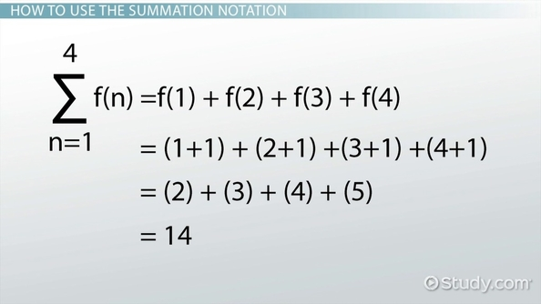
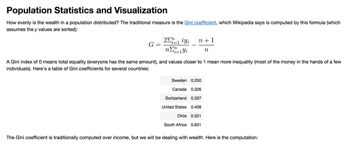
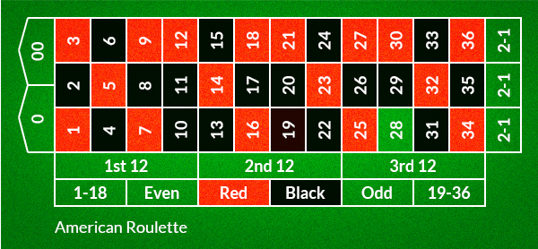

A little python to alleviate math programming
Hello Pythonistas , In this blog post we are trying to see how can we represent the mathematical formula that uses summation notation in Python. I am not really a math lover so whenever i see something represented in this kind of formula , i get nervous about whether i will be able to handle it or not.
Gini Coefficient
This excerpt has been taken from Economics simulation.
As seen in the formula , i goes from 1 to n which can be done using for loop ** for i in range(n) ** for numerator , we can see that for each i we are performing ** ( i * y[i] ) and finally there is sum() function which is replacing the sigma.
for the denominator we are not doing any alteration on each iteration we can simply invoke sum() on y
def gini(y):
"Compute the Gini coefficient (a measure of equality/inequality) in a population, y."
y = sorted(y)
n = len(y)
numer = 2 * sum((i) * y[i] for i in range(1, n))
denom = n * sum(y)
return (numer / denom) - (n + 1) / n
Chained comparisons
In [2]: x = 10
In [3]: y = 20
In [4]: 15 > x and 15 < y
Out[4]: True
In [5]: x < 15 < y
Out[5]: True
Simulating Roulle spins
How to perform Six roulette wheel spins (weighted sampling with replacement) There are 18 Red slots , 18 black slots and 6 green slots. .. code:: python
>>> from random import *
>>> choices(['red', 'black', 'green'], [18, 18, 2], k=6)
['red', 'green', 'black', 'black', 'red', 'black']
Biased Coins
This excerpt has been taken from Random module documentation
>>> # Estimate the probability of getting 5 or more heads from 7 spins
>>> # of a biased coin that settles on heads 60% of the time.
>>> trial = lambda: choices('HT', cum_weights=(0.60, 1.00), k=7).count('H') >= 5
>>> sum(trial() for i in range(10000)) / 10000
0.4169